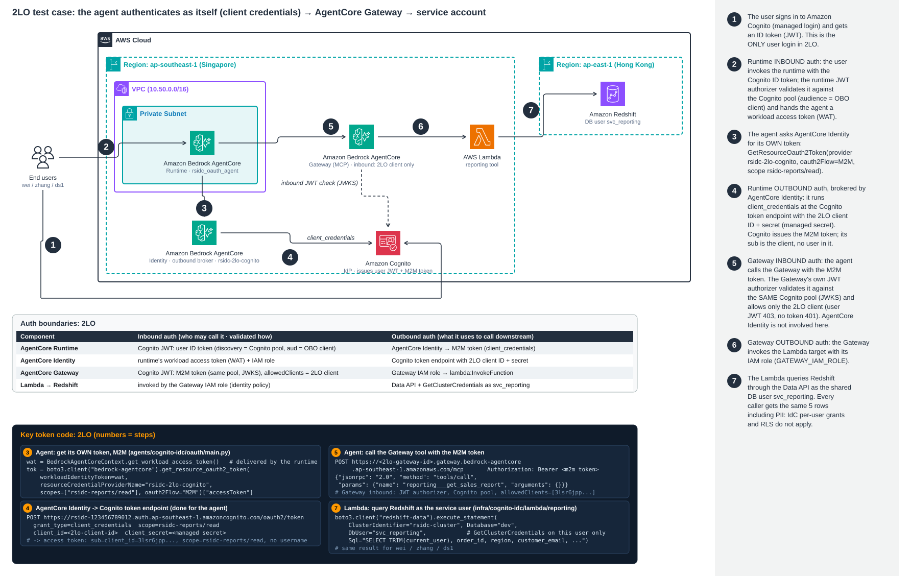

Architecture: Agent (client credentials) → Gateway → Lambda → Redshift
Goal: compare the other AgentCore Identity outbound patterns with OBO on the same Redshift data. The OBO runtime
(rsidc_data_agent, version 3) and its tests are not modified; a separate runtime is used.
With 2LO the agent authenticates as itself: AgentCore Identity fetches a Cognito token with the client_credentials grant,
the Gateway accepts only that client (allowedClients), and the reporting Lambda queries Redshift as the service user svc_reporting.
No end-user identity reaches Redshift.

Open full size · Click the diagram to open it full size.
Animated walkthrough: flow.html (2LO tab).
Who authenticates what (2LO / 3LO)
The OAuth runtime (Step 12) is shared with Part 2 (3LO).